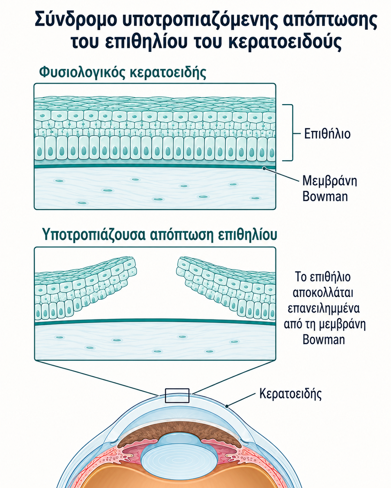
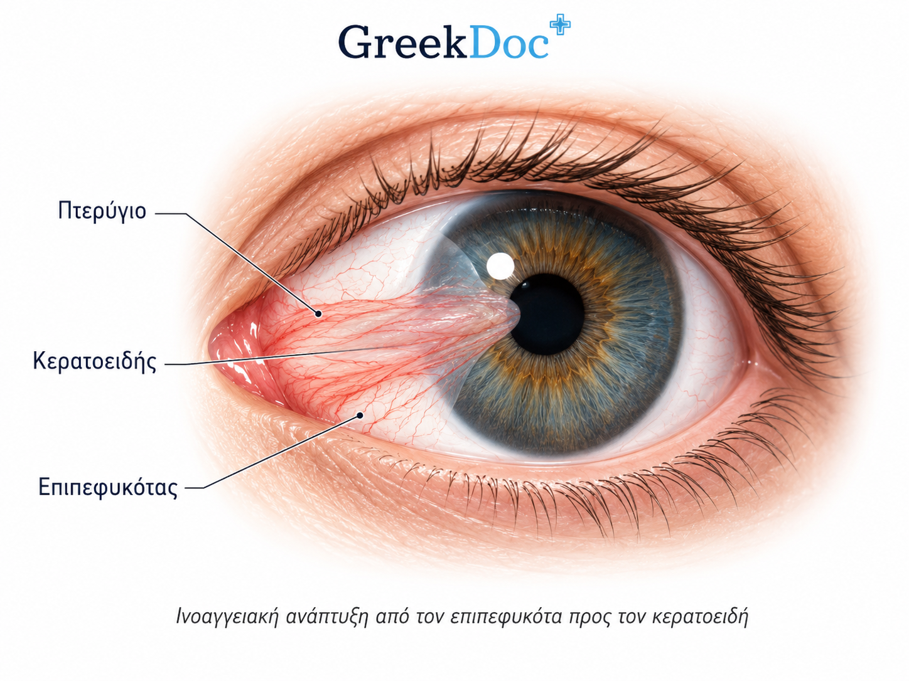
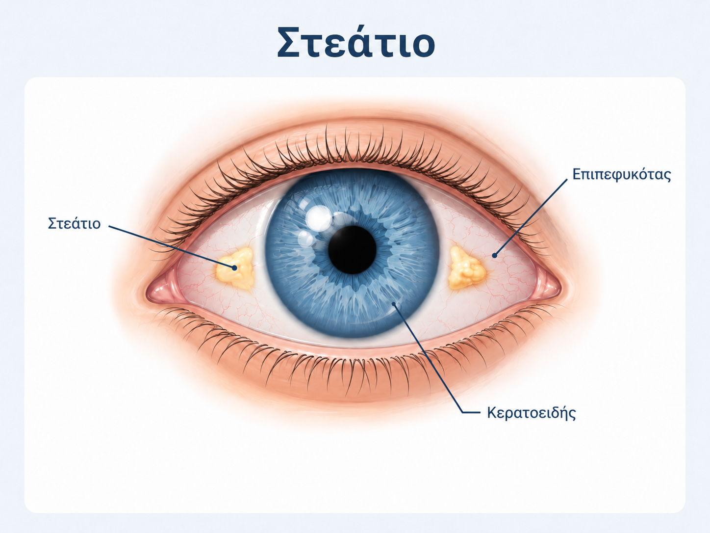
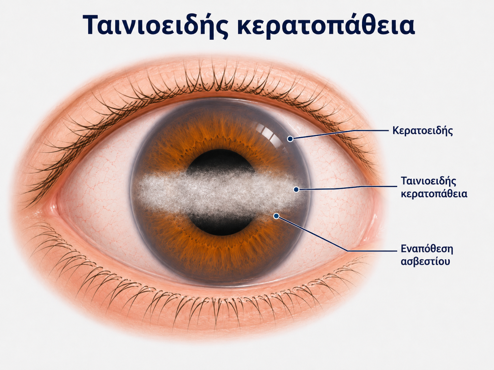
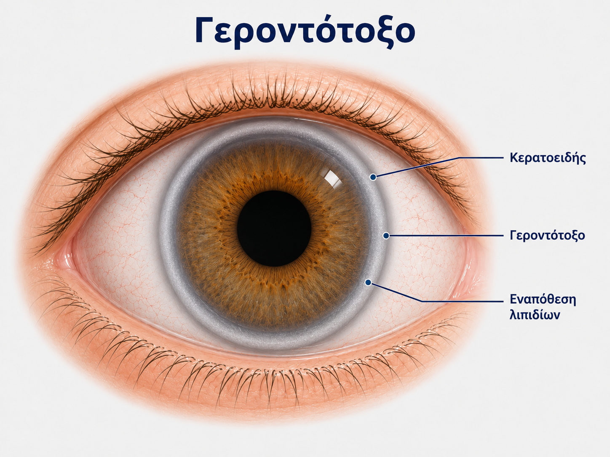
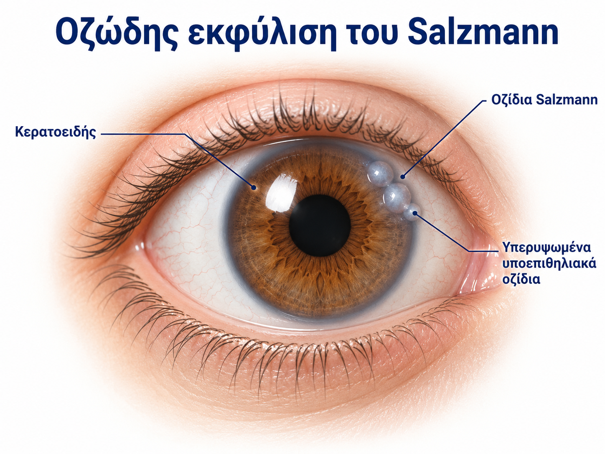
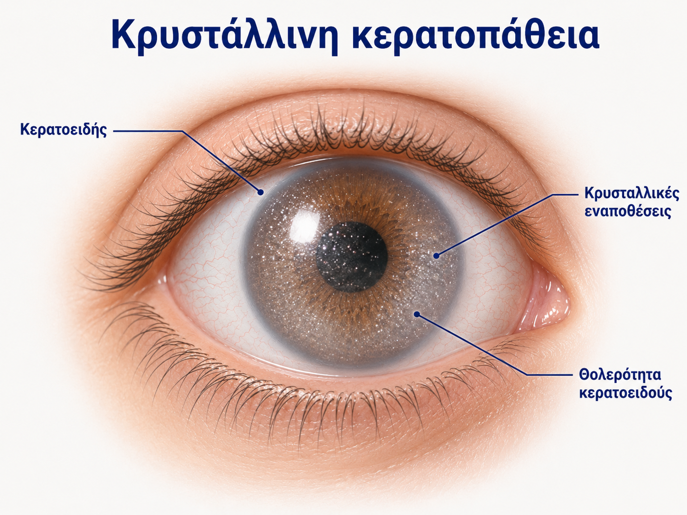
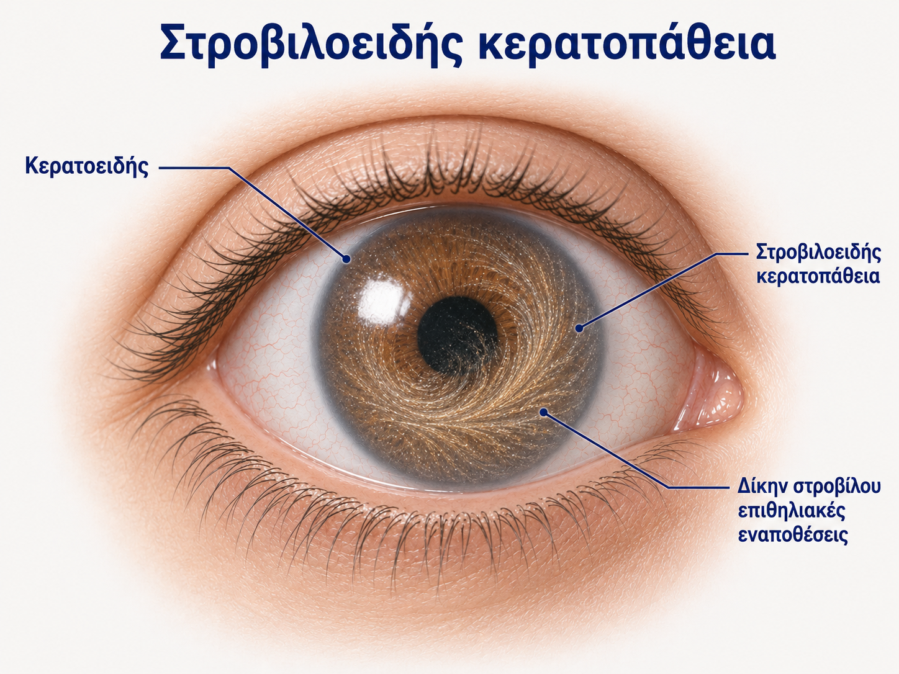

Δυστροφίες
Πρωτοπαθείς
Εγγενείς/κληρονομικές
Συνήθως αμφοτερόπλευρες
- Πρωτοπαθείς εγγενείς κληρονομικές διαταραχές.
- Συνήθως εμφανίζονται αμφοτερόπλευρα.
- Αφορούν δομές του κερατοειδούς όπως το επιθήλιο, το στρώμα ή το ενδοθήλιο.
Εκφυλίσεις
Δευτεροπαθείς
Γήρανση/φλεγμονή
Όχι πάντα αμφοτερόπλευρες
- Δευτεροπαθείς διαταραχές, δηλαδή προσβάλλεται ένας αρχικά υγιής ιστός.
- Μπορεί να σχετίζονται με γήρανση, χρόνια φλεγμονή ή προηγούμενη βλάβη.
- Δεν είναι απαραίτητο να είναι αμφοτερόπλευρες.
Γρήγορη ταξινόμηση
Δυστροφίες κερατοειδούς
- Σύνδρομο υποτροπιάζουσας απόπτωσης του επιθηλίου
- Δυστροφίες του στρώματος
- Σταγονοειδής κερατοειδής και ενδοθηλιακή δυστροφία Fuchs
- Κερατόκωνος
Εκφυλίσεις κερατοειδούς
- Πτερύγιο
- Στεάτιο
- Ταινιοειδής κερατοπάθεια
- Απόθεση λιπιδίων / γεροντότοξο
- Οζώδης εκφύλιση Salzmann
- Κρυστάλλινη κερατοπάθεια
- Στροβιλοειδής κερατοπάθεια

Υποτροπιάζουσα απόπτωση επιθηλίου: αστάθεια/απόπτωση επιθηλίου με εικόνα επιφανειακής βλάβης.

Πτερύγιο: ινοαγγειακή αλλοίωση που προχωρά από τον επιπεφυκότα προς τον κερατοειδή.

Στεάτιο: κιτρινωπή αλλοίωση στον επιπεφυκότα, χωρίς είσοδο στον κερατοειδή.

Ταινιοειδής κερατοπάθεια: ταινιοειδής υποεπιθηλιακή απόθεση ασβεστίου.

Γεροντότοξο: περιφερική δακτυλιοειδής/τοξοειδής απόθεση λιπιδίων.

Οζώδης εκφύλιση Salzmann: λευκωπά οζίδια μετά από χρόνια φλεγμονή.

Κρυστάλλινη κερατοπάθεια: μικροσκοπικοί κρύσταλλοι μέσα στον κερατοειδή.

Στροβιλοειδής κερατοπάθεια: vortex-like εναπόθεση στο επιθήλιο, κλασικά με αμιωδαρόνη.
1. Σύνδρομο υποτροπιάζουσας απόπτωσης του επιθηλίου του κερατοειδούς
Παθοφυσιολογία
Επηρεάζεται η σύνδεση του επιθηλίου με τη βασική μεμβράνη → δημιουργείται
αστάθεια του επιθηλίου → το επιθήλιο αποπίπτει/αποκολλάται εύκολα.
Αδύναμη πρόσφυση επιθηλίου
Αυτόματες εκδορές
Ξένο σώμα + δακρύρροια
Στικτή χρώση με φλουοροσεΐνη
Οπτική μνήμη: επιφανειακή απόπτωση/εκδορά του επιθηλίου → πόνος, δακρύρροια, αίσθημα ξένου σώματος.
Συμπτώματα
- Αυτόματες εκδορές κερατοειδούς, δηλαδή επιφανειακή απώλεια του επιθηλίου σαν «γρατζουνιές».
- Έντονο αίσθημα ξένου σώματος, ειδικά το πρωί.
- Η φλεγμονή προκαλεί δακρύρροια.
- Τα συμπτώματα μπορεί να βελτιώνονται κατά τη διάρκεια της ημέρας.
Κλινικά ευρήματα
- Ήπια ένεση επιπεφυκότος, δηλαδή αγγειοδιαστολή/κοκκίνισμα.
- Στικτή χρώση κερατοειδούς με φλουοροσεΐνη στον μπλε φωτισμό της σχισμοειδούς λυχνίας.
- Εκδορά κερατοειδούς στη σχισμοειδή λυχνία.
Διαφορική διάγνωση
- Ανεπαρκής σύγκλειση βλεφάρων
- Τραυματισμός
- Οικογενής δυστροφία του επιθηλίου, π.χ. δυστροφία δίκην δακτυλικών αποτυπωμάτων
- Δυστροφίες του στρώματος του κερατοειδούς
Αντιμετώπιση
- Λιπαντικά κολλύρια/αλοιφές για την εμμένουσα οφθαλμική δυσφορία.
- Αλοιφή χλωραμφενικόλης για αντιβιοτική κάλυψη όταν υπάρχει εκδορά/απόπτωση επιθηλίου.
- Αν οφείλεται σε τραύμα: μπορεί να χρησιμοποιηθεί μαλακός θεραπευτικός φακός επαφής.
- Σε εμμένουσες περιπτώσεις: χειρουργική παρέμβαση ή φωτοθεραπευτική κερατεκτομή με excimer laser.
Exam tip:
«Ξένο σώμα το πρωί + δακρύρροια + στικτή χρώση με φλουοροσεΐνη» → σκέψου υποτροπιάζουσα απόπτωση/εκδορά επιθηλίου.
2. Δυστροφίες του στρώματος
Οι δυστροφίες του στρώματος επηρεάζουν το στρώμα του κερατοειδούς και μπορεί να οδηγήσουν σε
νεφέλωση, υποτροπιάζουσες εκδορές και απώλεια όρασης.
Δικτυωτή δυστροφία
- Αποτίθεται στο στρώμα του κερατοειδούς αμυλοειδές.
- Το αμυλοειδές έχει μορφή διακλαδώσεων.
- Έχει αυτοσωματική επικρατή κληρονομικότητα.
- Προκαλεί συμπτώματα υποτροπιάζουσας απόπτωσης του επιθηλίου.
- Ο κεντρικός κερατοειδής γίνεται νεφελώδης → απώλεια όρασης.

Δικτυωτή δυστροφία: γραμμικές/διακλαδιζόμενες θολερότητες στο στρώμα.
Άλλες δυστροφίες του στρώματος
- Δυστροφία Reis-Bücklers του πρόσθιου στρώματος
- Κοκκώδης δυστροφία
- Κηλιδώδης δυστροφία
Είναι λιγότερο συχνές καταστάσεις, αλλά μπορούν να επηρεάσουν την όραση και να συνυπάρχει σύνδρομο υποτροπιάζουσας απόπτωσης του επιθηλίου.
3. Σταγονοειδής κερατοειδής και ενδοθηλιακή δυστροφία Fuchs
Σταγονοειδής κερατοειδής
- Κατάσταση δυσλειτουργίας ή απώλειας ενδοθηλιακών κυττάρων.
- Εμφανίζεται στον κερατοειδή στο πλαίσιο της γήρανσης.
Δυστροφία Fuchs
- Προοδευτική απώλεια ενδοθηλιακών κυττάρων.
- Δυσπραγία / δυσλειτουργία / ανεπάρκεια ενδοθηλίου.
- Οιδηματώδης κερατοειδής → απώλεια διαφάνειας → μείωση όρασης.
- Επώδυνες φυσαλίδες επιθηλίου: φυσαλιδώδης κερατοπάθεια.
- Μπορεί να συμβούν ουλοποίηση και αγγείωση.
Μετά από χειρουργική επέμβαση καταρράκτη
- Οφθαλμοί με δυσλειτουργία του ενδοθηλίου μπορεί να παρουσιάσουν δυσπραγία μετά από χειρουργική επέμβαση καταρράκτη.
- Μπορεί να προκύψει αφάκικη ή ψευδοφακική φυσαλιδώδης κερατοπάθεια.
Αντιμετώπιση
- Τοπικά υπερωσμωτικά/υπέρτονα διαλύματα, π.χ. χλωριούχο νάτριο 5%.
- Όταν η απώλεια όρασης ή ο πόνος είναι σημαντικά: διαμπερής κερατοπλαστική ή ενδοθηλιακή κερατοπλαστική.
- Η επέμβαση μπορεί να γίνει για απώλεια όρασης και για πόνο, ακόμη και όταν η πρόγνωση για την όραση είναι φτωχή.
Exam tip:
Fuchs = ενδοθήλιο που αποτυγχάνει → οίδημα κερατοειδούς → θόλωση/μείωση όρασης ± επώδυνες φυσαλίδες.
4. Κερατόκωνος
Ορισμός
Ο κερατόκωνος είναι μια επίκτητη ανωμαλία του σχήματος του κερατοειδούς με
προοδευτική εμφάνιση. Είναι συνήθως αμφοτερόπλευρος αλλά ασύμμετρος.
Συσχετίσεις
- Η επίπτωση είναι περίπου 1 στους 20.000.
- Σχετίζεται με συστηματικά νοσήματα, όπως σύνδρομο Down και σύνδρομο Marfan.
- Σχετίζεται και με οφθαλμικά νοσήματα, όπως ατοπική κερατοεπιπεφυκίτιδα.
Τι συμβαίνει στον κερατοειδή;
- Ο κερατοειδής προβάλλει προς τα εμπρός με μορφή κώνου.
- Η κορυφή του κώνου λεπταίνεται.
- Ο κερατοειδής ουλοποιείται και παραμορφώνεται.

Κερατόκωνος: προοδευτική λέπτυνση/προβολή του κερατοειδούς με αλλοίωση του σχήματός του.
Κλινική εικόνα
- Βραδεία επιδείνωση της όρασης, συχνά αρχικά ετερόπλευρη.
- Προοδευτική μυωπία και αστιγματισμός.
Οξύς ύδρωπας
- Μπορεί να εμφανιστεί οξύς ύδρωπας.
- Το στρώμα αιφνιδίως παρουσιάζει πάχυνση και θόλωση.
- Εισέρχεται υδατοειδές υγρό μέσω ρήξεων στη μεμβράνη του Descemet → ουλοποίηση.
Διάγνωση
- Προοδευτικός μυωπικός αστιγματισμός.
- Σχισμοειδής λυχνία: πολλαπλές, μόλις υποσημαινόμενες αλλοιώσεις.
- Αυτοματοποιημένη τοπογραφία κερατοειδούς για πρώιμη διάγνωση.
Αντιμετώπιση
- Διόρθωση διαθλαστικών ανωμαλιών.
- Φακοί επαφής όταν τα γυαλιά δεν διορθώνουν πλέον τον αστιγματισμό.
- Οξύς ύδρωπας: λιπαντικές ουσίες και υπέρτονα διαλύματα.
- Cross-linking: ριβοφλαβίνη + υπεριώδης ακτινοβολία, κυρίως σε πρώιμα στάδια.
- Διαμπερής κερατοπλαστική όταν δεν διορθώνεται οπτικά ή υπάρχει σημαντική ουλοποίηση.
Exam tip:
Κερατόκωνος = προοδευτική λέπτυνση/προβολή κερατοειδούς → μυωπία + αστιγματισμός. Αν προχωρήσει: οξύς ύδρωπας ή κερατοπλαστική.
Εκφυλίσεις κερατοειδούς
Οι εκφυλίσεις είναι δευτεροπαθείς αλλοιώσεις του κερατοειδούς. Δεν είναι απαραίτητα κληρονομικές και δεν είναι απαραίτητο να είναι αμφοτερόπλευρες.
Πτερύγιο
Επιπεφυκότας που προχωρά προς τον κερατοειδή.
Επιπεφυκότας που προχωρά προς τον κερατοειδή.
Στεάτιο
Παρόμοιο, αλλά μένει στον επιπεφυκότα.
Παρόμοιο, αλλά μένει στον επιπεφυκότα.
Ταινιοειδής
Ασβέστιο υποεπιθηλιακά στη μεσοβλεφάρια περιοχή.
Ασβέστιο υποεπιθηλιακά στη μεσοβλεφάρια περιοχή.
Λιπίδια
Απόθεση λιπιδίων, π.χ. γεροντότοξο.
Απόθεση λιπιδίων, π.χ. γεροντότοξο.
Salzmann
Λευκωπά οζίδια μετά από χρόνια φλεγμονή.
Λευκωπά οζίδια μετά από χρόνια φλεγμονή.
Στροβιλοειδής
Αμιωδαρόνη, συνήθως χωρίς συμπτώματα.
Αμιωδαρόνη, συνήθως χωρίς συμπτώματα.
1. Πτερύγιο
Ορισμός
- Μη νεοπλασματική ινοαγγειακή εκφυλιστική αλλοίωση.
- Εκτείνεται από τον μεσοβλεφάριο επιπεφυκότα προς τον κερατοειδή, κάτω από το επιθήλιο.
Συμπτώματα / προβλήματα
- Σπανίως παρεμβάλλεται στον οπτικό άξονα ή προκαλεί αστιγματισμό.
- Συχνά προκαλεί αισθητικό πρόβλημα.
- Μπορεί να προκαλεί επίμονο αίσθημα ξένου σώματος.
Πτερύγιο: αλλοίωση που ξεκινά από τον επιπεφυκότα και προχωρά προς/πάνω στον κερατοειδή.
Αντιμετώπιση
- Χειρουργική αφαίρεση και αποκατάσταση του ελλείμματος με τμήμα επιπεφυκότος του ίδιου ασθενούς.
- Η τεχνική αυτή έχει υψηλά ποσοστά επιτυχίας.
Exam tip: Πτερύγιο = ινοαγγειακή αλλοίωση από επιπεφυκότα προς κερατοειδή.
2. Στεάτιο
- Παρόμοια εξεργασία με το πτερύγιο.
- Προβάλλει μόνο τον επιπεφυκότα της μεσοβλεφάριας περιοχής.
- Δεν επεκτείνεται στον κερατοειδή.
- Δεν απαιτείται συνήθως χειρουργική επέμβαση.
Στεάτιο: μένει στον επιπεφυκότα και δεν προχωρά στον κερατοειδή.
Να το ξεχωρίζεις: Πτερύγιο → μπαίνει στον κερατοειδή. Στεάτιο → μένει στον επιπεφυκότα.
3. Ταινιοειδής κερατοπάθεια
Τι είναι;
- Υποεπιθηλιακή απόθεση ασβεστίου.
- Εντοπίζεται στη μεσοβλεφάρια περιοχή.
Αίτια / συσχετίσεις
- Χρόνια ενδοφθάλμια φλεγμονή.
- Συστηματική υπερασβεστιαιμία.
- Ιδιοπαθώς σε μεγαλύτερης ηλικίας ασθενείς.
Ταινιοειδής κερατοπάθεια: η εικόνα βοηθά να θυμάσαι την «ταινία» ασβεστίου στη μεσοβλεφάρια περιοχή.
Συμπτώματα
- Μείωση όρασης λόγω προβολής του κεντρικού κερατοειδούς.
- Αίσθημα ξένου σώματος λόγω ανωμαλιών του υπερκείμενου επιθηλίου.
Αντιμετώπιση
- Αν τα συμπτώματα είναι σημαντικά, το ασβέστιο απομακρύνεται με τοπικό καθαρισμό.
- Χρησιμοποιείται χηλικός παράγοντας.
Exam tip: Ταινιοειδής κερατοπάθεια = υποεπιθηλιακή απόθεση ασβεστίου στη μεσοβλεφάρια περιοχή.
4. Απόθεση λιπιδίων και γεροντότοξο
- Συσσώρευση διακριτών αποθέσεων λιπιδίων στον κερατοειδή.
- Συνήθως κοντά σε περιοχές αγγείωσης του κερατοειδούς, όπως μετά από λοίμωξη.
Γεροντότοξο
- Συχνή εκφύλιση στους περισσότερους ηλικιωμένους.
- Στενή κυκλοτερής ταινία λιπιδίων στον περιφερικό κερατοειδή.
- Σε νέους ενήλικες μπορεί να αποτελεί ένδειξη υπερλιπιδαιμίας.
Γεροντότοξο: περιφερικός λευκός/γκριζωπός δακτύλιος από λιπίδια, με καθαρό διάστημα από το σκληροκερατοειδικό όριο.
Exam tip: Γεροντότοξο σε ηλικιωμένο = συχνό. Σε νέο άτομο = σκέψου υπερλιπιδαιμία.
5. Οζώδης εκφύλιση του Salzmann
- Σε κερατοειδή εκτεθειμένο σε χρόνια φλεγμονή μπορεί να αναπτυχθούν λευκωπά οζίδια.
- Το υπερκείμενο επιθήλιο τείνει να είναι ανώμαλο και ασταθές.
- Οι λιπαντικές ουσίες είναι χρήσιμες για την ανακούφιση των συμπτωμάτων.
Salzmann: λευκωπά/γκριζωπά οζίδια στον κερατοειδή, συνήθως μετά από χρόνια φλεγμονή.
Exam tip: Salzmann = χρόνια φλεγμονή + λευκωπά οζίδια + ασταθές επιθήλιο.
6. Κρυστάλλινη κερατοπάθεια
- Σχηματισμός μικροσκοπικών κρυστάλλων εντός του κερατοειδούς.
- Μπορεί να παρατηρηθεί σε ποικιλία καταστάσεων.
Παραδείγματα
- Δυσπρωτεϊναιμίες
- Λήψη χρυσού για θεραπευτικούς λόγους
- Μεταβολικές νόσοι: κυστίνωση, ουρική αρθρίτιδα
Κρυστάλλινη κερατοπάθεια: μικροσκοπικές λαμπερές/κρυσταλλικές εναποθέσεις μέσα στον κερατοειδή.
7. Στροβιλοειδής κερατοπάθεια
- Απόθεση στο επιθήλιο με χαρακτηριστική στροβιλοειδή μορφή.
- Σχετίζεται με φάρμακα, ιδίως με αμιωδαρόνη.
- Δεν προκαλεί συμπτώματα και δεν επηρεάζει την όραση.
Στροβιλοειδής κερατοπάθεια: χαρακτηριστικό στροβιλοειδές/vortex πρότυπο εναπόθεσης στο επιθήλιο.
Exam tip: Στροβιλοειδής κερατοπάθεια = αμιωδαρόνη + στροβιλοειδής απόθεση στο επιθήλιο + χωρίς επίδραση στην όραση.
Για τις εξετάσεις — Κερατοειδής: δυστροφίες και εκφυλίσεις
| Κατάσταση | Λέξη-κλειδί | Τι πρέπει να θυμάσαι |
|---|---|---|
| Υποτροπιάζουσα απόπτωση επιθηλίου | Ξένο σώμα το πρωί | Αστάθεια σύνδεσης επιθηλίου-βασικής μεμβράνης → εκδορές → φλουοροσεΐνη. |
| Δικτυωτή δυστροφία | Αμυλοειδές σε διακλαδώσεις | Αυτοσωματική επικρατής, νεφελώδης κεντρικός κερατοειδής, απώλεια όρασης. |
| Fuchs | Ενδοθήλιο | Απώλεια ενδοθηλιακών κυττάρων → οίδημα κερατοειδούς → θόλωση/μείωση όρασης. |
| Κερατόκωνος | Μυωπικός αστιγματισμός | Προοδευτική προβολή/λέπτυνση κερατοειδούς. Cross-linking σε πρώιμα στάδια. |
| Πτερύγιο | Επιπεφυκότας → κερατοειδής | Μη νεοπλασματική ινοαγγειακή εκφυλιστική αλλοίωση. |
| Ταινιοειδής κερατοπάθεια | Ασβέστιο | Υποεπιθηλιακή απόθεση ασβεστίου στη μεσοβλεφάρια περιοχή. |
| Γεροντότοξο | Περιφερική ταινία λιπιδίων | Σε ηλικιωμένους συχνό. Σε νέο άτομο σκέψου υπερλιπιδαιμία. |
| Salzmann | Λευκωπά οζίδια | Χρόνια φλεγμονή + ασταθές επιθήλιο. |
| Στροβιλοειδής | Αμιωδαρόνη | Vortex-like απόθεση στο επιθήλιο, χωρίς συμπτώματα/όραση. |
Δυστροφίες vs Εκφυλίσεις: Δυστροφίες = πρωτοπαθείς, κληρονομικές, συνήθως αμφοτερόπλευρες. Εκφυλίσεις = δευτεροπαθείς, γήρανση/φλεγμονή/βλάβη, όχι απαραίτητα αμφοτερόπλευρες.